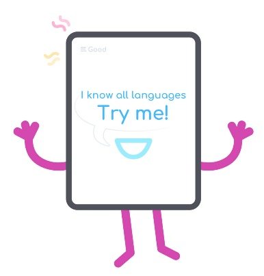

Dozens of dictionaries in one learning program
Reading and watching films with a translator

Now the Internet resources have various kinds of free dictionaries and translation services. EasyLang was built exactly for reading articles, watching films in English and other languages, you don't have to visit any other translation resources.
EasyLang.app use services like Google Translate, Google Dictionaries and dozens of the other dictionaries.
Reading a text or watching a film with subtitles, there was no need to open any extra “windows” for viewing some dictionary articles or translation. EasyLang provides access to online translate services and dictionaries.